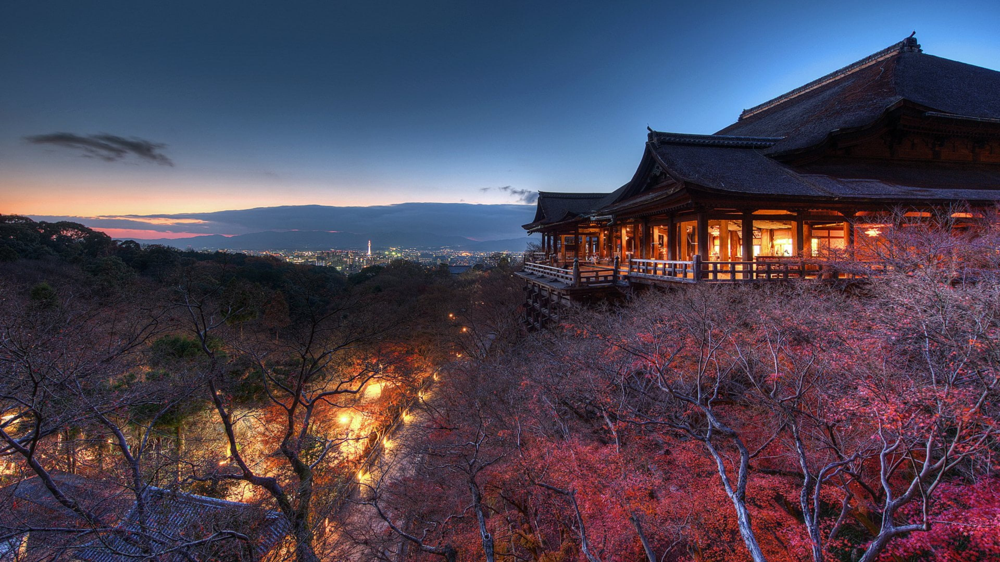

¡Templos que tienes que conocer en JAPÓN!
Templo de kiyomizu-dera en Kioto
Otowasan Kiyomizudera se ubica en la ciudad de Kioto, en Japón, y forma parte de los Monumentos históricos de la antigua Kioto, pertenecientes al Patrimonio de la Humanidad declarado por la Unesco. Kiyomizu-dera, que en japonés significa “templo del agua pura”, fue construido en el año 778 en las colinas del este de Kioto, en el mismo lugar en el que se encuentra la cascada Otowa. El edificio sobresale de la colina y ofrece a los visitantes unas vistas espectaculares de la ciudad.

Castillo Matsumoto en Nagano
El castillo de Matsumoto o Matsumotojō (松本城) es uno de los castillos más bonitos de todo Japón y una de las principales atracciones turísticas de la ciudad de Matsumoto, en la prefectura de Nagano. Además de ser uno de los tres castillos más populares de todo Japón, por merecimiento propio.